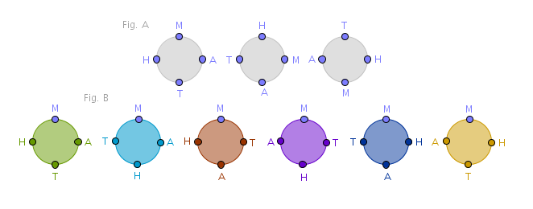

4.1.1) Linear Permutations
4.1.2) Circular Permutations
4.1.3) Interbucket Distributions
4.2.1) Combinations
4.2.2) Symmetry Property
4.2.3) Number of Subsets
4.2.4) Interbucket Distributions
So far we have used various counting principles to solve various problems
by crafting a custom tailored chain of reasoning for each problem. Next we
will look at a number of situations that allow a sweeping generalization to
be made as long as it is possible to fold a problem into a prepackaged scenario.
We will mostly use MCP to deduce the formulas for these
scenarios. If it helps, you may think of them as follows - if the counting
principles are scalpels then the upcoming scenarios are hammers.
Let us also agree that from now on when we say "input items" or "input (multi)set" we mean "\(n\) items used to construct a certain arrangement according to a prescribed rule". Let us name that resulting arrangement an "output arrangement/(multi)set".
When an output arrangement is order-sensitive then we will name it a permutation - as a noun. When an output arrangement is order-insensitive then we will name it a combination - also as a noun.
We may then think about the upcoming situations as rules or black boxes - some number of input items goes in and a certain arrangement comes out. Our objective then is:
find a closed-form formula which will make it possible to find the total number of possible arrangements without generating their exhaustive list and without calculating that list's size by hand
If you stop and think about this for a while it should appear to be nothing short of magic.
4.1.1) (Linear) Permutations of Sets
We defined a permutation (as a noun) to be such an arrangement of some finite number of input items in which order matters. Using:
$$S = 123, \; |S| = 3$$as an example, a permutation (or \(3-\)permutation) of \(S\) is a list of all of its items (taken \(n = 3\) at a time) in some order. There are six of those:
$$123 \quad 132 \quad 213 \quad 231 \quad 312 \quad 321$$where the individual subsets:
$$123, \; 132, \; 213, \; \dots$$are output arrangements.
There are six \(2-\)permutations of \(S\):
$$12 \quad 21 \quad 13 \quad 31 \quad 23 \quad 32$$There are three \(1-\)permutations of \(S\):
$$1 \quad 2 \quad 3$$And there is one \(0-\)permutation or an empty set of \(S\).
A single permutation of a set then is an output arrangement made up of distinct input items in which:
- the order of input items matters
- no input item may appear more than once (no repetitions)
In an exhaustive list of all the permutations of a set:
- all the input items must eventually be used
- the sizes of the intermediate \(r-\)arrangements are identical - some finite arbitrary given ahead of time positive integer \(r\) between zero and \(n = |S|\)
Scenario:
given a set of three digits: $$1, 2, 3$$ how many different \(2-\)digit order-sensitive arrangements can be constructed if each digit can appear in any single output arrangement only once?
For example, arrangements like:
$$23, \; 32$$are allowed and are taken to be different while arrangements like:
$$123, \; 11$$are not allowed since the first one is of the wrong size and the second one contains illegal duplicates.
Formally:
what is the number of \(r-\)permutations of a set of \(n\) items?
If we were to construct a single permutation of the above set then with every current selection of some item the number of choices for the next selection will diminish by one.
If we first chose \(1\), for example, then we can not use it again within this arrangement - to fill in the next position in a permutation we must choose only between the remaining items, \(2\) or \(3\). Once we pick \(2\), for example, then we can not use it again within this arrangement - to fill in the next position we may now choose only \(3\) and so on.
In general then for the permutation's first position we choose from \(n\) available items, for the permutation's second position we choose from the remaining \((n - 1)\) available items, for the third position - from \((n - 2)\) available items and so on until we are left with \((n - (r - 1))\) candidates to choose from for the permutation's \(r-\)th position. Verifying that the independence requirement is met, by direct application of MCP, after making \(r\) consecutive choices we obtain:
$$P(n, r) = n \times (n - 1) \times (n - 2) \times \dots \times (n - r + 1)$$To express \(P(n, r)\) in closed form we observe that it has the first \(r\) diminishing by one terms starting from \(n\). To turn such an expression into a full factorial of \(n\) we have to multiply it by the remaining \((n - r)\) diminishing by one terms:
$$(n - r) \times (n - r - 1) \times \dots \times 2 \times 1 = (n - r )!$$To keep \(P(n, r)\) the same we also divide it by the same factor:
$$P(n, r) = \frac {n \times (n - 1) \times \dots \times (n - r + 1) \times (n - r) \times (n - r - 1) \times \dots \times 2 \times 1}{(n - r )!} = \frac {n!}{(n - r )!}$$ $$\begin{equation} \bbox[#e8e8e8,3pt]{P(n, r) = \frac {n!}{(n - r )!}} \end{equation}$$
\(P(n, r)\) is sometimes pronounced "\(n\) permute \(r\)" and there are several alternative notations you may see:
$$^nP_r, \; _nP_r, \; P_r^n$$and the like.
For the record we note the edge conditions:
$$P(n, 0) = 1$$ $$P(n, 1) = n$$ $$P(n, n) = n!$$
Example E12
How many different \(|S|-\)sized "words", including the nonsensical ones, can be made from a set of letters:
$$S = \{m, a, t, h \}$$From (1) it follow that the answer is:
$$P(4, 4) = 4! = 24$$different 4-letter "words".
One way to create an exhaustive list of all such "words" is to interpret MCP literally. After making the first choice, a letter \(m\), \(3\) more letters remain. Write down as many \(m\)s as there are remaining choices for the second letter:
$$m \quad m \quad m$$For each \(m\) make a choice for the second letter:
$$ma \quad mt \quad mh$$Two choices remain for the third letter for each ordered pair recorded so far - pick one such pair and add these choices to the list by turning one ordered pair into two ordered \(3-\)tuples:
$$\underbrace{mat \quad mah} \quad mt \quad mh$$pick the next pair:
$$mat \quad mah \quad \underbrace{mta \quad mth} \quad mh$$and the last one:
$$mat \quad mah \quad mta \quad mth \quad \underbrace{mha \quad mht}$$Now only one choice remains for the fourth letter:
$$math \quad maht \quad mtah \quad mtha \quad mhat \quad mhta$$which concludes the sequence of choices driven by the first letter. Since three such choices remain - \(a, t, h\) - repeat the above process three more times:
$$math \quad maht \quad mtah \quad mtha \quad mhat \quad mhta$$ $$amth \quad amht \quad atmh \quad athm \quad ahmt \quad ahtm$$ $$tamh \quad tahm \quad tmah \quad tmha \quad tham \quad thma$$ $$hamt \quad hatm \quad hmat \quad hmta \quad htam \quad htma$$We thus construct \(4\) rows containing \(6\) columns each or a total of \(24 = 4!\) \(4-\)letter "words".
Example E13
If we take a standard deck of cards to be our "alphabet" then how many different \(52-\)card "words" can be made from it?
From (1) it follow that the answer is:
$$P(52, 52) = 52!$$
Example E14
How many different \(16-\)ball "words" can be made if all the \(16\) billiard balls are used?
Again:
$$P(16, 16) = 16!$$
Example E15
How many different \(2-\)permutations of the set "\(math\)" are possible?
$$P(4, 2) = \frac {4!}{(4 - 2)!} = 12$$or:
$$ma \quad mt \quad mh$$ $$am \quad at \quad ah$$ $$tm \quad ta \quad th$$ $$hm \quad ha \quad ht$$There should be \(4\) rows containing \(3\) columns each for a total of \(12\) \(2-\)permutations.
4.1.2) Circular Permutations
If we bend our (normally) linear arrangement of items into a circular arrangement - how many of these are possible if the circle must remain fixed in its plane?
Fix an orthogonal \(xyz\) coordinate system in space. Pick the \(xOy\) plane. In that plane fix a circle centered at the origin \(O\). Glue the items onto the circumference of the circle and rotate that circle about the \(z\) axis. Then even though the (absolute) \((x, y)\) coordinates of the items will change from one rotation to the other their relative position with respect to each other will not since the motion is rigid. As such, the new arrangements will still be considered "the same" since the items' immediate "left" and "right" neighbors will remain the same.
In other words two circular permutations are different if one can not be obtained from the other via the rotation process described above. In the drawing below the arrangements in Fig. A are the same while the arrangements in Fig. B are different:
To deduce the formula for this case we observe that many linear arrangements correspond to one circular arrangement. If we pick any one linear arrangement and keep shifting its items by just one position in some constant direction until each item again occupies its original position then we will obtain all the linear arrangements corresponding to one circular arrangement meaning that we will find all the linear arrangements that will not compare "different" when bent into a circle.
Using "\(math\)" linear arrangement, for example, let us always shift its items Westward one at a time. When an item falls off one edge of the \(4-\)position arrangement we grab it and place it into a position corresponding to the opposite edge of the arrangement:
$$math \quad athm \quad thma \quad hmat$$We see that there will always be \(4 = n\) such arrangements. We now go back to our original set of \(24\) linear permutations, partition it in such a way that each subset contains exactly \(4\) linear permutations that will not compare "different" if bent into a circle and by DCP we obtain that:
$$\begin{equation} \bbox[#e8e8e8,3pt]{\frac {P(n, n)}{n} = (n - 1)!} \end{equation}$$is the number of circular permutations of \(n\) distinct items. This informal proof also provides a way to generate circular permutations: with our permutations generation approach these will be the \(6\) items in Fig. B.
If we look closely at Fig. B - which other combinatorial reasoning can be suggested to prove the above formula?
Hint:
MCP
4.1.3) Interbucket Distributions
\(P(n, r)\) is applicable to the distribution of \(r\) distinct items among \(n\) distinct buckets with the following restrictions:
4.1.3.1) each item must be in some bucket
4.1.3.1) at most one item per bucket is allowed
4.1.3.1) the order of items across the buckets matters;
For a proof we observe that we have \(n\) buckets to choose from for the placement of the first item, \((n - 1)\) buckets to choose from for the placement of the second item and so on until we have \((n - r + 1)\) buckets left to choose from for the placement of the \(r-\)th item. By MCP then the number of such distributions is \(P(n, r)\).
As an exercise write down all \(6\) distributions of two items, \(a\) and \(c\), among \(3\) buckets: \(b_1, b_2, b_3\).
4.2.1) Combinations
We defined a combination (as a noun) to be such an arrangement of some finite number of input items in which order does not matter. We can say then that a combination is a permutation whose order matters requirement was removed. Using:
$$S = \{1, 2, 3 \}$$as an example, there is only one \(3-\)combination of \(S\):
$$123$$There are three \(2-\)combinations of \(S\):
$$12 \quad 13 \quad 23$$There are three \(1-\)combinations of \(S\):
$$1 \quad 2 \quad 3$$And there is one \(0-\)combination or an empty set of \(S\).
The above \(r-\)combinations are generally taken to be the subsets of \(S\) so instead of saying "\(r-\)combination" we may also say "\(r-\)subset" or simply "subset".
A single combination of a set then is an output arrangement made up of distinct input items in which:
- the order of items does not matter
- no input item may appear more than once (no repetitions)
In an exhaustive list of all the combinations of a set:
- all the input items must eventually be used
- the sizes of the intermediate \(r-\)arrangements are identical - some finite arbitrary given ahead of time positive integer \(r\) between zero and \(n = |S|\)
Scenario:
given a set of three digits: $$1, 2, 3$$ how many different \(2\)-digit order-insensitive arrangements can be constructed if each digit can appear in any one output arrangement only once?
For example, arrangements like:
$$12 \quad 21$$are allowed but are taken to be the same while arrangements like:
$$11 \quad 123$$are not allowed since the first one contains illegal duplicates and the second one is of the wrong size.
Formally:
what is the number of \(r-\)subsets of a set of \(n\) items?
To deduce the formula for this case we temporarily cancel the "order does not matter" requirement - an approach popular in solving combinatorial problems. Then the type of arrangements that we are dealing with is permutations and by the previous scenario, permutations of sets, the number of possible \(r-\)permutations of such items, from (1), is \(P(n, r)\).
We next observe that the construction of each such \(r-\)permutation can be broken into two consecutive events:
1) choosing \(r\) items from \(n\) items
2) arranging the chosen items in some order
The number of outcomes of the first event is what we are after - let us name it \(C(n, r)\). The number of outcomes of the second event we already know - if we put:
$$n = r$$then from (1) it is:
$$P(r, r) = r!$$We verify the independence requirement and by MCP we obtain:
$$P(n, r) = C(n, r) \times r!$$or:
$$\begin{equation} \bbox[#e8e8e8,3pt]{C(n, r) = \frac{P(n, r)}{r!} = \frac{n!}{r! (n - r)!}} \end{equation}$$\(C(n, r)\) is sometimes pronounced "\(n\) choose \(r\)" and there are several alternative notations you may see:
$$^nC_r, \quad _nC_r, \quad C_r^n, \quad \Big(_r^n \Big)$$and the like.
For the record we note the edge conditions:
$$C(n, 0) = 1$$ $$C(n, 1) = n$$ $$C(n, n) = 1$$We should have no problems figuring out how to generate an exhaustive list of all the possible combinations of a set by hand. One way to do that is to fall back on the previously solved problem of generating all the permutations of a set and then reduce its solution set by throwing out all the duplicates. For our sample \(\{1, 2, 3\}\) problem we obtain:
$$12 \quad 13 \quad 23$$or:
$$C(3, 2) = \frac {3!}{2!(3 - 2)!} = 3$$\(2-\)combinations.
Example E16
\(17\) points are sprinkled on a plane in such a way that no three are collinear. How many straight lines can be drawn through these points?
Since a straight line is uniquely determined by a pair of points regardless of their order in the pair then the answer is the number of \(2-\)subsets of \(17\) items:
$$C(17, 2) = \frac{17!}{2!15!} = 136$$straight lines.
What about the number of triangles?
$$C(17, 3) = \frac{17!}{3! 14!} = 680$$\(C(n, r)\)s are also known as Binomial Coefficients - they are used in the expansion of the expressions of the following form:
$$(x + y)^n$$The values for various \(C(n, r)\)s can be found with Pascal's Triangle. \(C(n, r)\)s show up in solutions of many seemingly unrelated problems across many seemingly unrelated fields. See, for example, Two Eggs problem in Reverse Order section under Basic Approaches.
\(C(n, r)\)s have many interesting properties which you are encouraged to investigate on your own. We will mention just two - the Symmetry Property and the Number of Subsets.
4.2.2) Symmetry Property
Recall our complement sets discussion in SCP section where we noted that a subset of \(S\) that contains all but \(r\) items is uniquely determined by the very \(r\) items that are not in it. In fact nothing prevents us from switching the notations around - we can claim \(A^c\) to be the original set and \(A\) to be its complement, formally:
$$(A^c)^c = A$$It follows then that the number of ways in which \((n - r)\) items can be chosen from a set of \(n\) is exactly the same as the number of ways in which \(r\) items can be chosen from the same set:
$$C(n, n - r) = \frac {n!}{(n - r)! (n - n + r)!} = \frac {n!}{r!(n - r)!} = C(n, r)$$The above property is sometimes called the Symmetry Property of \(C(n, r)\) and we can rewrite it as follows:
$$from \; \; n = a + b \; \Rightarrow \; C(n, a) = C(n, b)$$
4.2.3) Number of Subsets
Let us now ask ourselves - what is the total number of subsets of a set of \(n\) items?
Here by subsets we mean all the possible subsets: \(0-\)subsets, \(1-\)subsets, \(2-\)subsets and so on. On the one hand, we can answer that question via MCP. Our first input item can either be in the output subset or not - two choices only. Regardless of the previous choice the second input item can either be in the output subset or not - again, two choices only. By applying this logic to the remaining input items in the set, from MCP it follows that: $$\underbrace{2 \times 2 \times 2 \times \dots \times 2}_{n} = 2^n$$
is the total number of all the subsets of a set.
On the other hand, we can always partition the output set of all the subsets of the input set in such a way that each item of the output set represents exactly one \(r-\)subset. For example:
$$S_i = \{a, b, c \}$$ $$S_o = \{\{\}, \{a\}, \{b\}, \{c\}, \{ab\}, \{ac\}, \{bc\}, \{abc\}\}$$Since the number of such \(r-\)subsets is given by \(C(n, r)\), from ACP it follows that the sum of \(C(n, r)\)s for all the \(r\)s is also the answer to the above question:
$$C(n, 0) + C(n, 1) + C(n, 2) + \dots + C(n, n) = 2^n = (1 + 1)^n$$If we require the number of non-empty subsets then it is:
$$2^n - 1$$This task of counting the number of subsets in a set also opens the door for recurrence relations and generating functions ideas that are not discussed in this tutorial.
4.2.3) Interbucket Distributions
\(C(n, r)\) is applicable to the distribution of \(r\) indistinguishable items among \(n\) distinct buckets with the following restrictions:
4.2.3.1) each item must be in some bucket
4.2.3.2) at most one item per bucket is allowed
4.2.3.3) the concept of order of items across the buckets does not apply
For a proof we observe that since all the input items are indistinguishable, for a unique description of any given distribution all we need is bucket numbers that have exactly one item in them because each bucket's number from \(N\) is unique. We then throw out the original input items and make the buckets' numbers our new input items. The problem then is rephrased as:
in how many ways \(r\) items can be chosen out of \(n\)?
But we already know the answer to that question:
$$C(n, r)$$As an exercise write down all \(3\) distributions of two \(a\)s among \(3\) buckets \(b_1, b_2, b_3\).
Before we conclude this section we note that when it comes to indistinguishable input items the multifaceted \(C(n, r)\) has yet another interpretation, see 5.1.2 section, permutations of multisets with finite supply.
\(\blacksquare\)